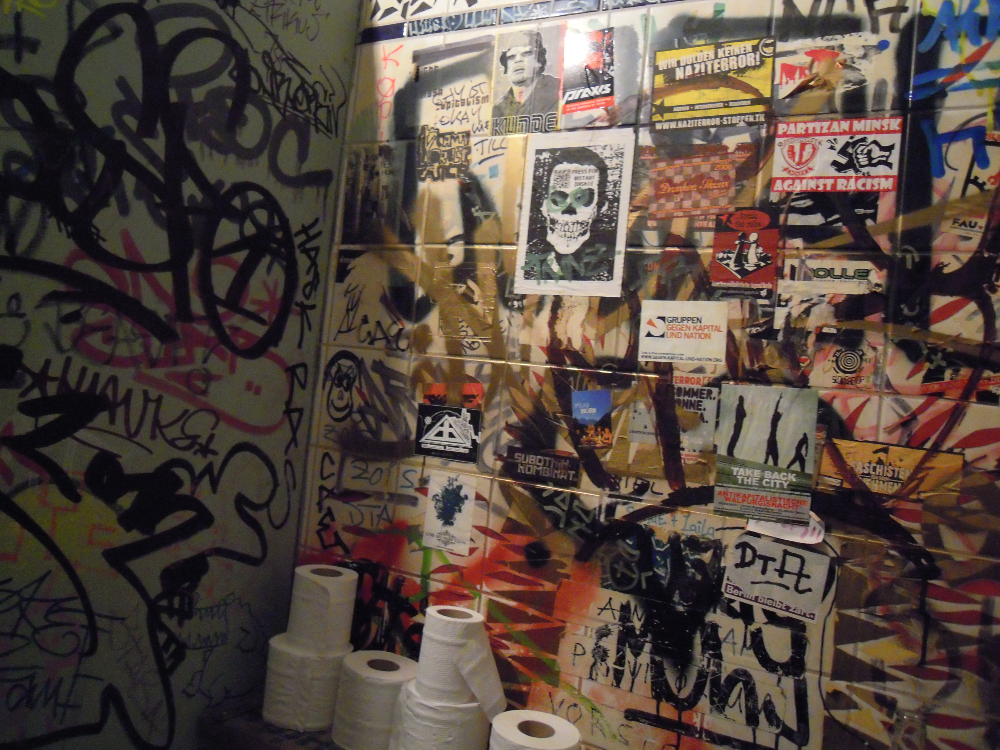
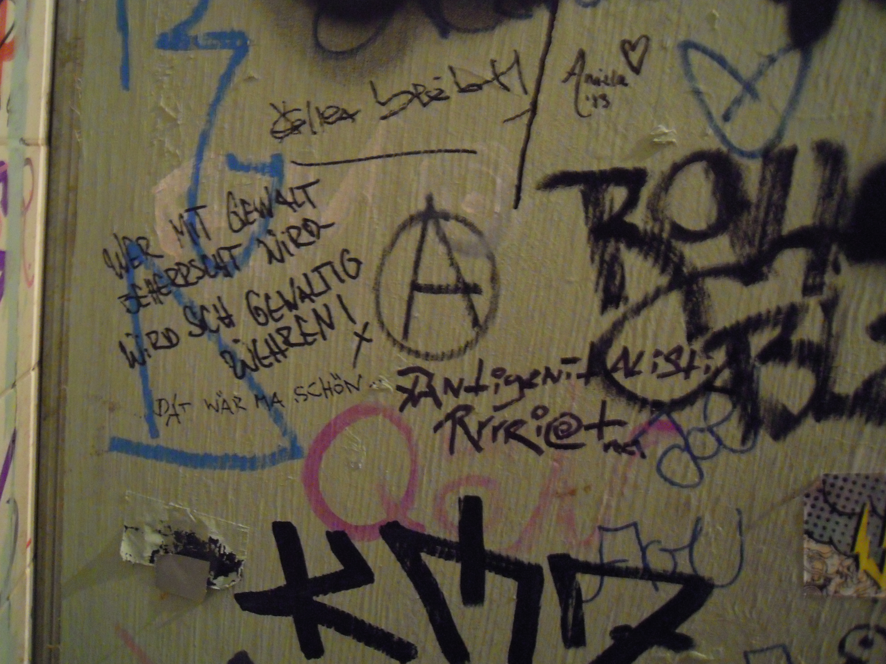
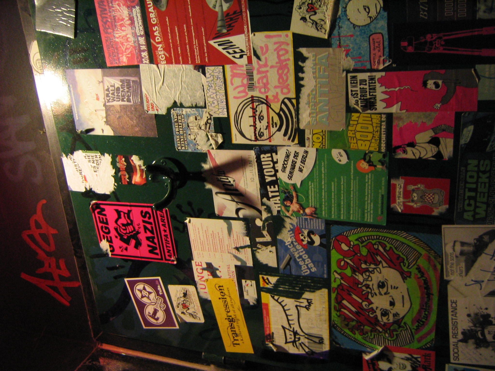
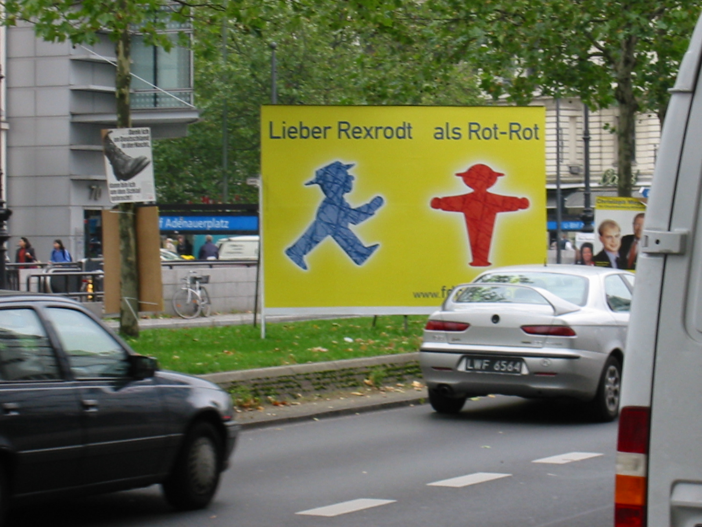
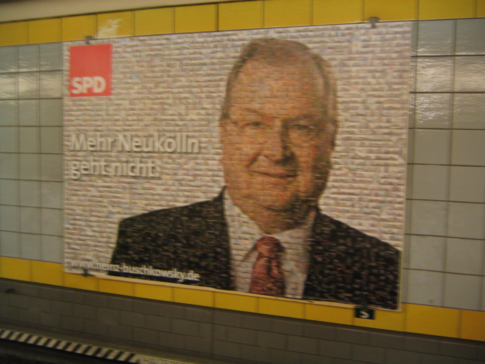
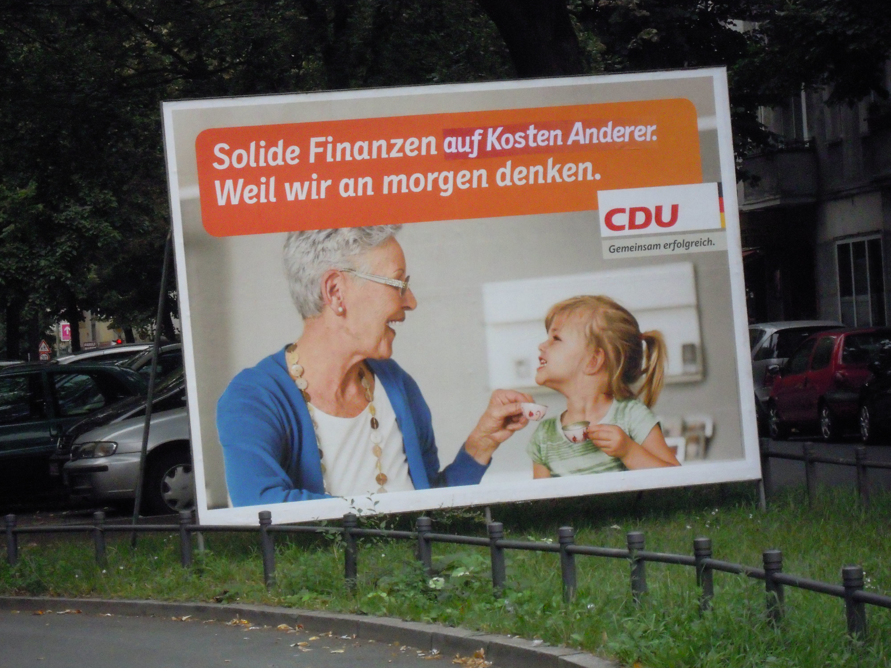

Definitly a tool for me, less interested in methods and complex technologies (as this goes into optics which is kind of my profession)...
Definitly a tool for me, less interested in methods and complex technologies (as this goes into optics which is kind of my profession)...
- graffity layes of texture that melt together in a camouflage of texts and textures. Independent common grounds and places, where advertisement of artist has its platform as well as love messages, alcohol blinded frustration or political mesages.




This project is a longtime study or documentation about the political advertisement boards of Berlins politicians and parties.

